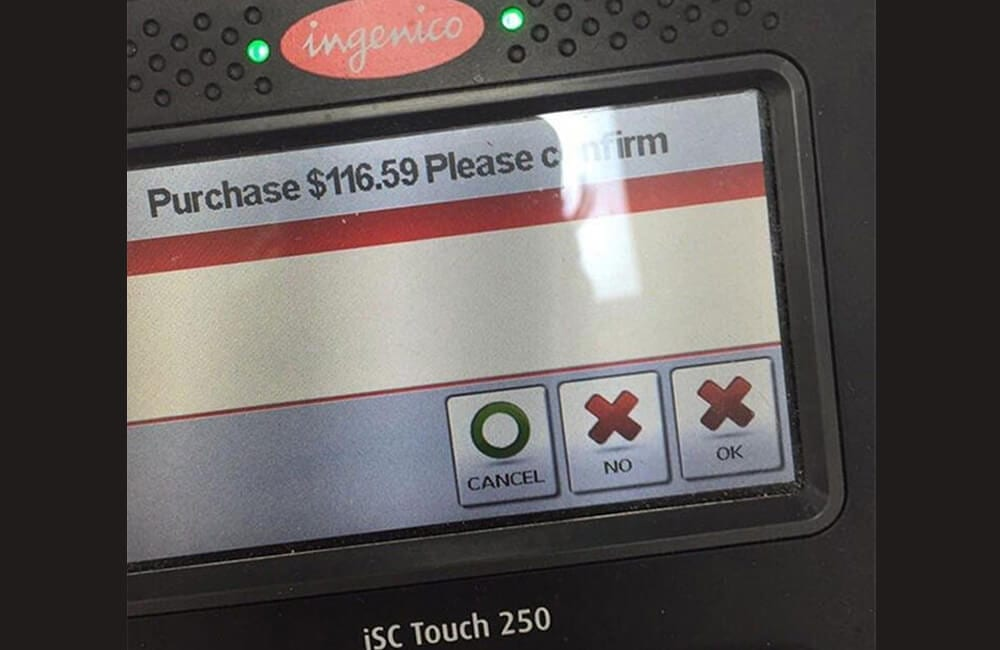

Design Examples
F27ID Introduction to Interactive Design
2021-2022
## Overview * Design Examples * Think about what is wrong with these designs and how they could be improved * Ask yourself why each design failed and how could it have been prevented (think about the colours, placement of text, environment, graphics, culture, size, ...)
<aside class='notes'> </aside>
<aside class='notes'> </aside>
 <aside class='notes'> </aside>
<aside class='notes'> </aside>
## Summary * Help to understand the importance of design is in everyday produces * How a simple color or placement of text/graphics can have a major impact on the designs usability (and success)